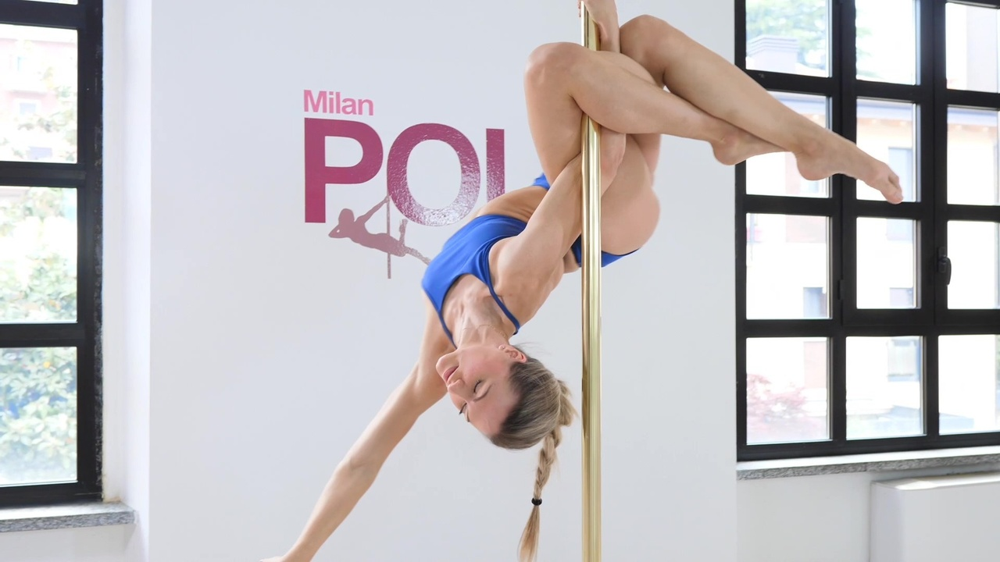

Activitati practice
Pole dance

Despre Pole dance Pole dance-ul este un tip de antrenament care castiga teren tot mai mare în ultima perioada si in Moldova. Acesta nu este dansul la bara binecunoscut din cluburi.
Pole Dance este un sport recunoscut pe plan international, si peste tot în lume se organizează competitii de acest gen, pentru care se munceste din greu. Acesta este un sport care transforma corpul unei femei intr-o adevarata operă de arta, imbinand perfect forta si antrenamentul fizic cu gratia si eleganta unei balerine.
Desi, la prima vedere pare usor, trebuie sa ai destulă forta. Practic acest sport de 4 ani.Pole dance-ul pastreaza în totalitate beneficiile unei lectii de gimnastica aerobica dar, in plus, imbunatateste forta partii superioare a corpului, ajuta la tonifierea musculaturii, imbunatateste ritmul cardiac, creste flexibilitatea corporala si rezistenta, ofera mai multa putere și echilibru.
Balet
 Despre balet Inainte de Pole dance am practicat 6 ani baletul. Baletul este un gen de spectacol alcatuit din dans ca element artistic figurativ de bazA, muzicA si pantomima, spectacol teatral executat de una sau mai multe persoane. Un corp, un ansamblu de balet compus din balerini si balerine, executa dansuri si miscari mimice, dupa o compozitie muzicala.
Despre balet Inainte de Pole dance am practicat 6 ani baletul. Baletul este un gen de spectacol alcatuit din dans ca element artistic figurativ de bazA, muzicA si pantomima, spectacol teatral executat de una sau mai multe persoane. Un corp, un ansamblu de balet compus din balerini si balerine, executa dansuri si miscari mimice, dupa o compozitie muzicala.
despre balet
- 1 Primele informatii despre scenele de balet dateaza din timpul razboiului ruso-turc , atunci cînd în cartierul generalului-feldmareșal rus
- 3 Spargatorul de Nuci, cel mai popular balet din lume
- 4 in anul 2001, Sapurmurat Niyazov, presedintele Turkmenistanului, a interzis baletul si opera pe motiv ca nu respecta mentalitatea si spiritul turkmen.
- 5 Anne Raven Wilkinson, prima balerina afro-americana care a dansat intr-o companie de balet
Obiecte preferate si nota
| Romana |
L.italiana |
Fizica |
Istoria |
Matematica |
| 9,33 |
10 |
9,53 |
10 |
9,40 |
Alte hobbyuri
Activitatile
- Pictura
- echitatie
- Muzica
- Calatorii
- Privirea filmelor
- Pimbari cu familia


Sfarsit!
Sindirinschi Sofia cl.11-A"A"